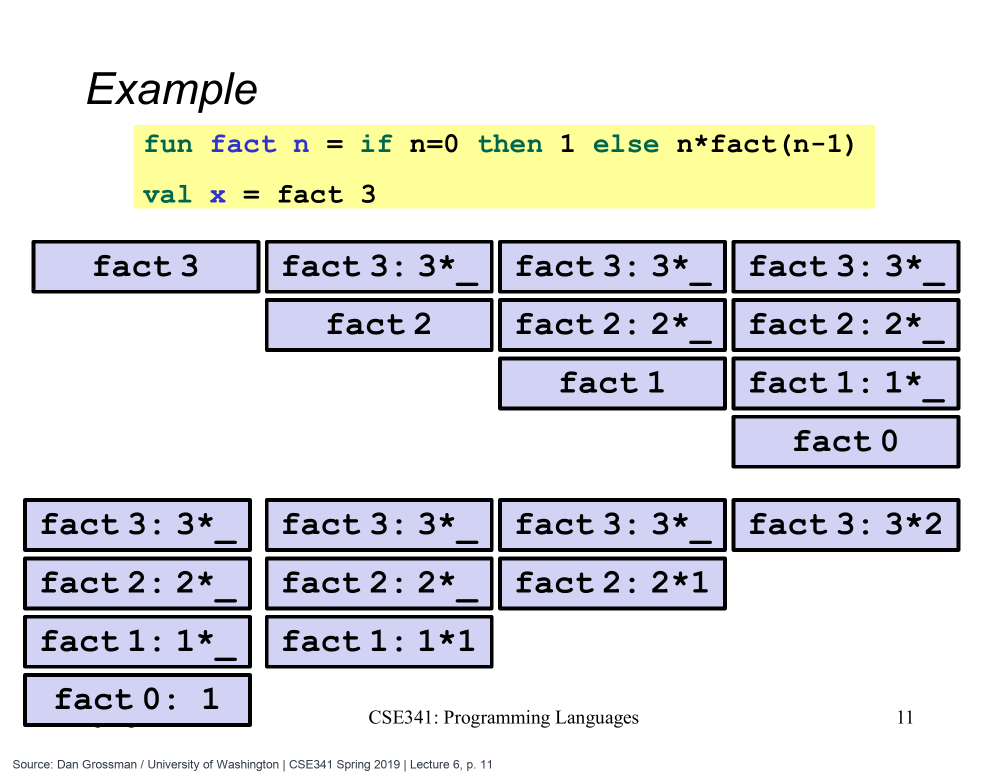

递归下去以后，原来的调用还在等什么
前面用异常看过一种中断计算的路径。现在回到正常返回：一个函数调用另一个函数时，自己有哪些工作必须留到以后？这个问题决定了某些递归为什么需要越来越多的调用栈空间，而另一些可以一直复用同一小块空间。
先看原课的阶乘函数。输入非负整数 n，输出从 n 乘到1的结果；0 的阶乘按定义是 1。
fun fact1 n =
if n=0 then 1
else n * fact1 (n-1)
val six = fact1 3
val one = fact1 0six 是 6，one 是 1。这里先限定非负整数：负数会不断减一，不能走到这条终止分支。结果能否由实现的整数范围表示，也是运行时的另一个条件；我们先用这些小输入看清控制过程。
函数没有完成，就还要保留它的工作
调用 fact1 3 时，函数不能立刻完成乘法，因为右边的 fact1 2 还没有答案。它需要记住：“等尾部结果回来，再乘以3。”下一次调用也一样，要记住回来后乘以2。
| 当前进入的调用 | 已经知道的值 | 还没完成的工作 |
|---|---|---|
fact1 3 |
n=3 |
3 * 后续结果 |
fact1 2 |
n=2 |
2 * 后续结果 |
fact1 1 |
n=1 |
1 * 后续结果 |
fact1 0 |
n=0 |
直接返回 1 |
运行时用调用栈管理这种“已开始但还没结束”的调用。每次调用对应一份记录，保存局部值和回来后要继续的位置，这份记录叫栈帧。相同函数可以同时有多个栈帧，因为 fact1 3 与 fact1 2 是两次调用，参数和等待的乘法都不同。

原图的 fact 对应本文的 fact1，从 fact 3 出发，答案为 6。请按上排从左到右、再下排从左到右阅读：每一列是不同时间的栈快照。计算 fact 0 以前，外层分别还在等 3×、2×、1×；取得 1 后才能逐层相乘。这些快照不是同一时刻并排存在的多份调用栈。
Dan Grossman / University of Washington, CSE341 Spring 2019 · Lecture 6 slides 第 11 页 · 点击图片看大图
原课图横向的每一列是不同时间的快照，不能把几列再叠成一个更大的栈。最深处同时存在 3、2、1、0 四次阶乘调用；0 返回1后，1 那层算出1，2 那层算出2，最外层才算出6。算完的调用逐层退出。
调用 fact1 n 时，这样等待的层数随 n 增长。不是所有递归都必然如此；关键在于回来以后是否真的还有工作。下一篇会改变计算安排，把这些乘法提前做掉，但我们先把判定标准说清楚。
也可以用未完成的表达式来读同一过程：3 * fact1 2 变成 3 * (2 * fact1 1)，再变成 3 * (2 * (1 * fact1 0))。这些括号并不是已经算好的乘积，而是每一层在等的工作。只有最里面得到1以后，外层才能依次完成；调用栈记录的正是这种继续位置。
只把另一个调用的答案直接交出去
假设一个函数在某条分支中，接下来只调用另一个函数，并直接把它的结果作为自己的结果。它既不再加一、不再乘某个数，也不需要拿这个结果去做第二件事，这次调用就处在尾位置，是一次尾调用。
在已经定义 fact1 的前提下，下面的 finish 提供了一个简单例子。输入负数时返回0，其他输入直接把阶乘函数的结果交出去。
fun finish n =
if n < 0 then 0
else fact1 n
val finished = finish 3finished 是 6。finish 对 fact1 的调用是尾调用，即使被调用的不是它自己。fact1 内部对自身的调用仍然不是尾调用，因为返回后还要做乘法。所以尾调用描述的是某个具体调用所在的位置，不是给一个函数盖上“所有地方都很省空间”的印章。
实现支持尾调用优化时，不必一直保留那个只准备转交答案的调用者；可以让被调用者复用它的调用栈空间。函数式语言如 ML 把这种能力作为重要的效率基础，使合适的递归能像循环一样，不随着迭代次数增加调用栈深度。这里节省的是调用栈，并不是说输入数据、结果数据也从此不占空间。
因此 finish 这一个尾调用最多省掉自己那份等待记录，不能顺便消除 fact1 内部一层层等待的乘法。判断整个计算会用多少栈空间，仍要继续看被调用函数的行为。只发现最外层有一次尾调用，不足以推断深处的递归也能保持固定栈深度。
“写在最后”不等于尾位置
fact1 的递归调用已经写在函数最后一行，但它仍然嵌在乘法里。真正最后完成的是乘法，不是那个调用。相反，先算好调用的参数，再进行最后一次调用，是允许的：需要检查的是调用回来以后还有没有工作，而不是调用之前有没有做运算。
尾位置还可以按表达式结构从外向里判断。下面的规则摘自原课程后面的精确定义，放在这里帮助阅读接下来的代码。
| 外层表达式 | 哪些内部位置可以继续是尾位置 |
|---|---|
fun f p = e |
函数体 e 本身是尾位置 |
尾位置中的 if e1 then e2 else e3 |
e2、e3 是；测试 e1 不是 |
尾位置中的 case e of ... |
各分支结果表达式是；被检查的 e 不是 |
尾位置中的 let ... in e end |
in 后的主体 e 是；绑定右边的表达式不是 |
| 一个函数调用 | 整体可能是；用于算函数和参数的子表达式不是 |
如果一个表达式已经不在尾位置，它内部的子表达式也不会突然变成当前函数的尾位置，因为外面那件未完成的事仍在等着。比如 f (g x) 整体可能是尾调用，但 g x 必须先返回，再执行 f，所以 g x 不是。
如果 let 里面定义了另一个函数，判断那个函数自身的递归时，要从它自己的函数体重新开始。它与外层函数属于不同的判断范围；这也是下一篇能在局部辅助函数中安排尾调用的原因。
同理，let val answer = fact1 n in answer end 中的调用位于绑定右边，按这些规则不是尾位置：正常的表达式求值仍要完成绑定并求值主体。一个实现可能另做简化优化，但那是另一回事；判断源代码的尾位置时不需要猜测这些优化。
尾递归是位置条件，不是新语法
当一个递归函数的所有递归调用都是尾调用时，就称它为尾递归函数。我们没有添加新的 ML 关键字，仍然使用前面学过的函数、模式、分支和局部绑定，只是重新安排了工作。
现在看求和也能判断：i + sum1 rest 在调用回来后还有加法，因此不是尾调用；如果某个辅助函数已经把新的总和算进参数，最后直接调用下一步，就有机会成为尾调用。下一篇会用阶乘、求和、反转三个完整例子，把“提前算进参数”变成可跟踪的步骤。
对应原课程与来源
本文主要对应 V20 Tail Recursion；尾位置的结构规则提前取自 V22 Perspective on Tail Recursion，后文将用它讨论实际取舍。依据官方视频、UW Unit 2 讲义第18–20页 与 Lecture 6 幻灯片 原创重组。